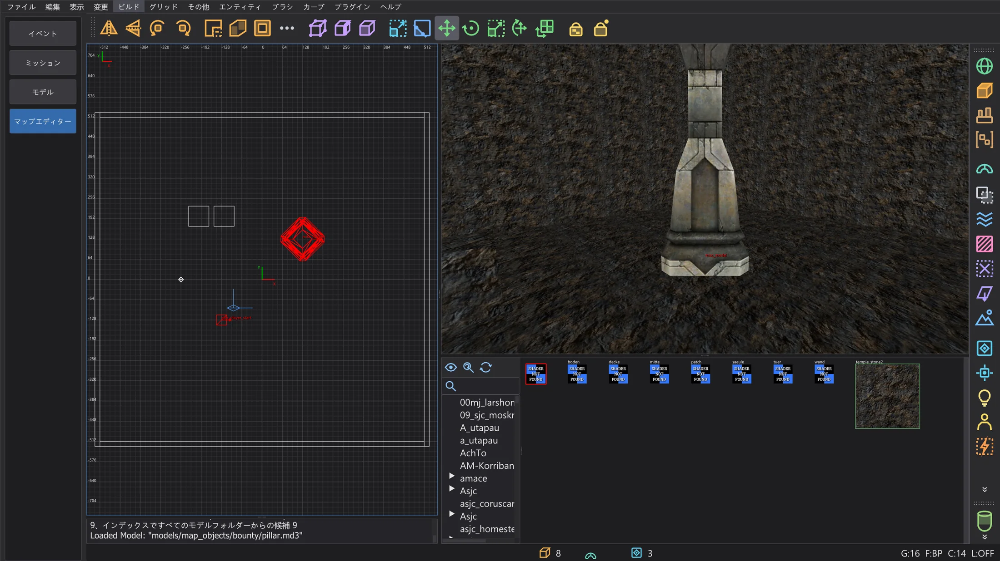
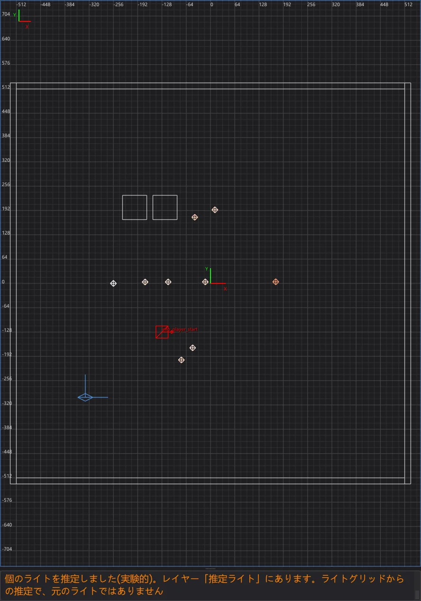

マップエディター:完成したマップを開いて変更する
ファイル > .bsp を開く でゲームのコンパイル済みマップを(.pk3 から直接)開き、エンティティを変更して ビルド > エンティティのみ更新 で書き戻します。ジオメトリと元のライトはバイト単位でそのまま残ります。
コンパイル済みマップを開く#

duel を入れた コンパイル済みマップを開く ダイアログ。各マップの横に、ゲームがそのマップを読み込むアーカイブが表示されます。一覧の下に misc_model とライトのオプションがあります。- 1
ファイル > .bsp を開く は、ゲームフォルダーのすべてのマップ(
maps/…/*.bsp)をゲームから見えるとおりに一覧にします。名前ごとに、ゲームが実際に読み込むものだけが表示されます(Mod はbaseより、後の .pk3 は前の .pk3 より優先)。右の列には .pk3 またはフォルダーが表示されます。フィルター に名前の一部を入力して絞り込めます。 - 2
マップをダブルクリックするか、選んで 開く をクリックします。ファイルから を使うと、ディスク上の任意の場所にある .bsp を開けます。
- 3
マップエディターは .bsp を設定フォルダー内の作業フォルダー(
karte_bsp\<名前>)にコピーし(ゲームフォルダーには決して書き込みません)、NetRadiant-Custom が .bsp をインポートするときと同じく q3map2-convertでマップに戻します。その後、マップは.mapと同じように開いています。開いているマップに未保存の変更がある場合は、先に確認します。
ゲームの .pk3 から開いた mp/duel1:.bsp からブラシ 362 個、パッチ 66 個、エンティティ 26 個。バックグラウンドで misc_model14 個が見つかり、見つからなかったモデルの三角形 938 個はレイヤー 認識できなかったモデル面 の薄いブラシ 779 個になりました(ジオメトリから misc_model を取り戻す を参照)。
コンパイル済みマップは元の .map ではありません。ブラシ(テクスチャ付き)、パッチ、エンティティは戻りますが、q3map2 が .bsp に焼き込んだものは戻りません。misc_model エンティティのモデル、デカール、ライトエンティティです。Jedi Academy 向けにコンパイルされたマップには通常ライトエンティティが残っておらず、光はライトマップとライトグリッドの中にしかありません。一部の面ではテクスチャの位置合わせがわずかに異なることがあります。LIGHT で再ビルドすると、元のライトなしで計算された新しい光になります。エンティティ(スポーン地点、NPC、アイテム、スクリプト、キー)だけを変更したい場合は、代わりに元のライトを残す方法を使います。独自の 3 つの機能でさらに多くを取り戻せます:エディターデータを保持 でビルドしたマップのエディターデータ(すべて正確に)、ジオメトリからの misc_model、推定ライトです。
.bsp に含まれなくなったもの#
q3map2 はマップのビルド中に一部のエンティティを削除するため、.bsp からは戻せません。変換の不具合ではありません。例として、あるテスターの Jedi Academy マップでは、388 個のライトのうち 9 個が戻り、265 個の misc_model は 1 つも戻らず、233 個の info_null はすべて残っていました。
- targetname のないライト:ゲーム中に切り替えられるライトだけが .bsp に残ります。それ以外のライトは、光がライトマップに計算された後で q3map2 が削除します(q3map2
writebsp.cpp、SetLightStyles)。例では targetname を持つ 9 個のライトです。代わりに ⟦ライトを推定(実験的)⟧ が推定ライトを置きます。 misc_model:q3map2 はモデルをマップのジオメトリに焼き込み、エンティティを削除します(model.cppの AddTriangleModels、bspfile_abstract.cppの UnparseEntities。マップが-keepmodelsでビルドされた場合を除く)。_decalと_skyboxも同様です。⟦ジオメトリから misc_model を復元⟧ はジオメトリの中からモデルを見つけ直します。func_group:ブラシは worldspawn に移され(map.cpp、MoveBrushesToWorld)、グループ自体はなくなります。- レイヤー、グループのキー、正確なテクスチャの位置合わせ:.bsp にはレイヤーがありません。
func_groupのキーはグループと一緒になくなります。ブラシ面の位置合わせは面の頂点から作り直されるため(-convert)、わずかに異なることがあります。 - ブラシのない面:ファイルが見つからないモデルの三角形や、固体でないブラシの面は、.bsp には描画用の面としてしか入っていません。ブラシとしてもモデルとしても戻りません。⟦認識できなかったモデル面をブラシとして残す⟧ で薄いブラシとして残せます。
- それ以外は残ります。たとえば
info_null(スポットライトの目標)、トリガー、ドアとそのキーです。hint・areaportal・skip ブラシは元のマップと同じく structural として戻ります。
エディターデータを残す#
自分のマップなら何も失わずに済みます。ビルドの前に ビルド > エディターデータを保持 をオンにします(既定でオフ、NetRadiant-Custom にはありません):
- すべての BSP ステップが
-keeplights付きで実行され、すべてのライトがエンティティランプに残ります。ゲームは targetname のないライトをマップ開始時に解放するため(OpenJKSP_light)、ゲーム中の負担にはなりません。オプティマイザーは確認項目 エンティティランプとその上限 でそのバイト数を数えます。 - ビルド後、.bsp の隣に
<マップ>.bhedができます。この .bsp のジオメトリの指紋つきの、正確なソースマップです。misc_modelは .bsp には入れず(ゲームが空のエンティティとして生成してしまうため)、このファイルに入ります。 - ファイル > .bsp を開く は .bsp の隣(ゲームの .pk3 の中も含む)でこのファイルを見つけ、指紋が合えば逆コンパイルの代わりにソースマップを開きます。
misc_model、func_group、テクスチャの位置合わせ、detail、レイヤーが戻ります。別のビルドのものであればコンソールにそう表示され、.bsp は通常どおり逆コンパイルされます。
ジオメトリから misc_model を取り戻す#
エディターデータがなければ、モデルは .bsp の中ではただの三角形です。コンパイル済みマップを開く ダイアログの ジオメトリから misc_model を復元(既定でオン、NetRadiant-Custom にはありません)を使うと、エディターは開いた後にバックグラウンドで進行状況ウィンドウを出しながらモデルを探します:
- 1
候補は、マップのシェーダーがあるフォルダー内のゲームのモデルファイルです。bhed_q3map2 がコンパイラーとまったく同じように読み込みます(
-bhedmodels、-bspと同じモデルローダー)。 - 2
各モデルを .bsp の三角形の中から探します(q3map2 が大きな面に統合した場合
forcemetaも含む)。正確に一致したものだけがorigin、angleまたはangles、modelscaleを持つmisc_modelになります。コンソールに最大の頂点誤差が表示されます。 - 3
モデルは 1 つの元に戻すステップとして追加されます。三角形が二重になることはありません。逆コンパイル結果にはそのブラシがないため、エンティティのみ更新 も引き続き使えます。検索が終わる前にブラシやパッチが変わった場合(インポート など)は結果を破棄するので、.bsp をもう一度開いてください。

misc_model として戻っています。jeditemple_garden(テスターのマップ、ソースあり)では 265 個中 265 個の misc_model が戻り、間違ったモデルは 1 つもありませんでした。ソースとの最大の差は位置で 0.002 ユニット、角度で 0.0002° です。ゲームのオリジナルマップには別のフォルダーのモデルもあり、見つからなかったものは三角形のままです。
system/nodraw テクスチャを貼った薄い detail ブラシになります。確認して、レイヤーを隠すか不要なものを削除してください。別の形で存在するジオメトリと重複することがあります。ライトの推定(実験的)#
コンパイル済みマップを開く ダイアログの ライトを推定(実験的)(既定でオフ、NetRadiant-Custom にはありません)は、.bsp のライトグリッドが光の来る方向を示す場所にライトを置きます。各グリッド点から指向性の光をジオメトリに当たるまで逆にたどり、多くのレイが集まる点をライトにし、強さと色はグリッドから求めます。ライトはレイヤー 推定ライト に入り、キー _bhed_geschaetzt 1 を持ちます(q3map2 とゲームはこのキーを無視します)。.bsp に残っていたライトとは重複しません。

元のライトを残す#

- 1
エンティティを変更します。キーと値(worldspawn も含む)の変更、スポーン地点・NPC スポナー・アイテムなどのポイントエンティティの移動・追加・削除、ブラシエンティティのキーの変更ができます。
- 2
ビルド > エンティティのみ更新 はマップを保存し、元の .bsp の新しいコピーを用意して、バックグラウンドで q3map2
-onlyentsを実行します(ビルドと同じく出力はコンソールに表示)。作り直されるのはエンティティランプだけで、エディターはそれを元のファイルのコピーに入れます。そのため、ほかのすべてのランプ(ジオメトリ、ライトマップ、ライトグリッド、可視性)はバイト単位で元のままです。 - 3
コンソールに エンティティを更新しました と、変更されていないランプの数が表示されます。結果は作業フォルダーの
<名前>.bspで、手を加えていない元のファイルは<名前>_original.bspとしてその隣に残ります。 - 4
遊ぶには、マップエディター:マップのビルド の説明どおりに新しい .bsp をゲームの
mapsフォルダーにコピーします。.pk3 から開いたマップは新しい名前にするのがおすすめです。そうすれば .pk3 の中の元のマップはそのまま残ります(例:maps\mpにduel1_neu.bspを置き、devmap mp/duel1_neuで起動)。
misc_model のように焼き込まれるエンティティはジオメトリの一部です。開いた後にそのどれかが変わっていると、エンティティのみ更新 は q3map2 を実行しません。エンティティのみ更新 ボックスが、BSP・VIS・LIGHT でマップを再ビルドする必要があること(光も新しく計算されること)を説明します。元に戻すでジオメトリを元の状態に戻せば、この項目はまた使えます。-keeplights 付きで実行され、ライトが残ります。同じメニューにある NetRadiant-Custom 本来の Entity-Only compile も -onlyents を実行しますが、チェックも元のファイルへの書き戻しも行いません。Jedi Outcast のマップではライトが消えたり、ライトグリッドが書き換えられたりすることがあります。.bsp を開く で開いたマップには エンティティのみ更新 を使ってください。